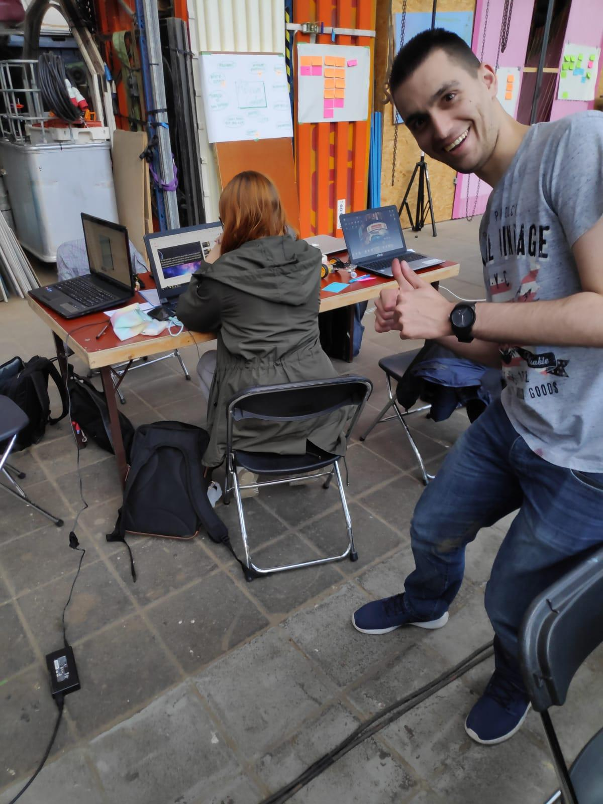
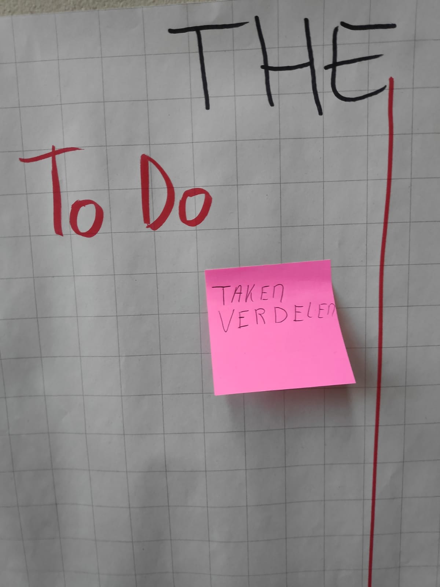
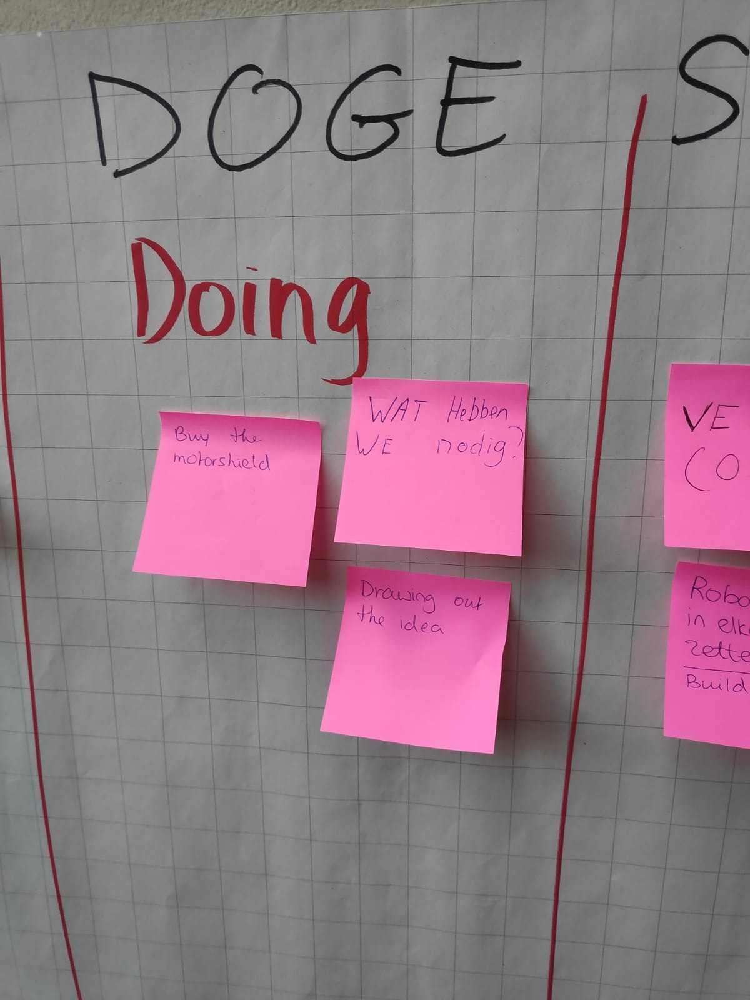
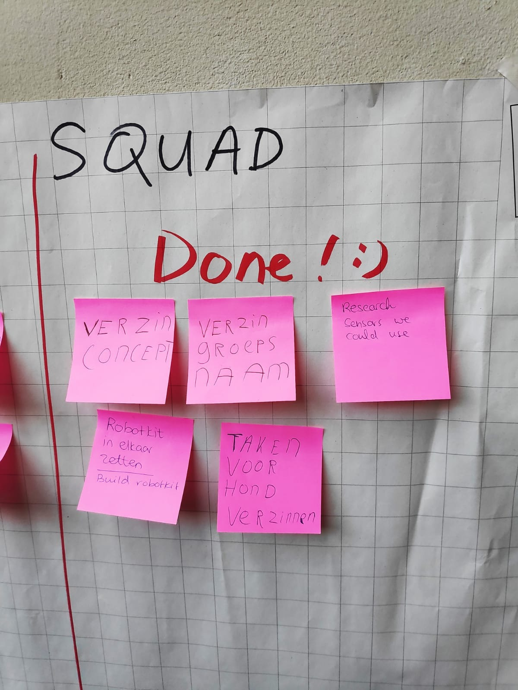
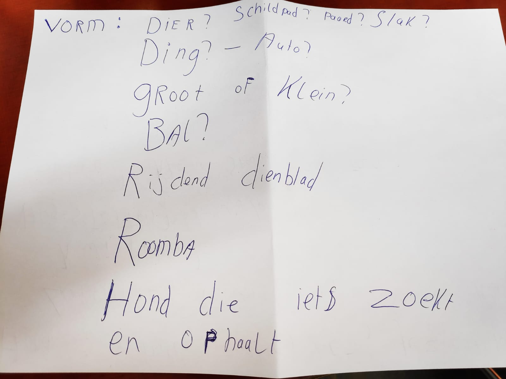
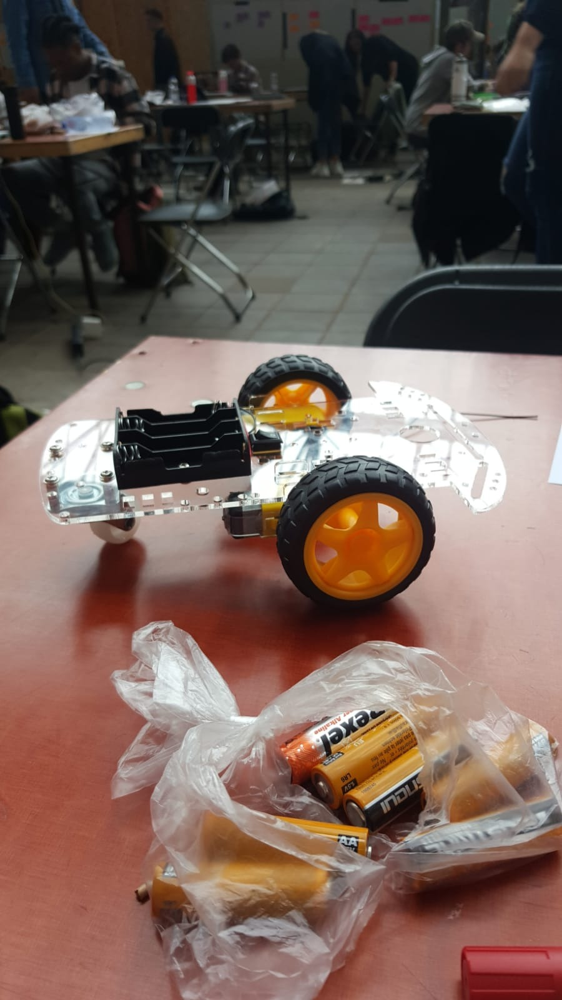
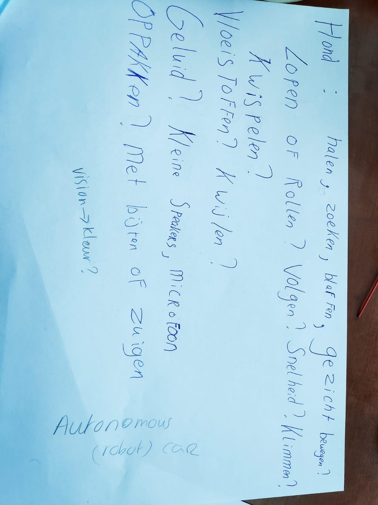

Lab Weeks - Dag 1
Dag 1 begon met een algemene briefing. Hierin werd uitgelegd wat de bedoeling was van de komende twee weken. Zo werden er een aantal veiligheidsregels uitgelegd en werd er verteld dat er studentassistenten aanwezig zouden zijn. Na de briefing gingen mensen op zoek naar de formulieren waarop stond bij wie je in een groep zou zitten. Ik zat in een groep met Dennis, Nicolette, Danique en Hiba.
Allereerst zijn we begonnen met het opzetten van onze werkruimte. Er waren uitklaptafels en uitklapstoeltjes aanwezig. Hiermee hebben we een werkplek gecreëerd. Zie onderstaande foto.
De docenten raden ons aan om gebruik te maken van de SCRUM methode. Dat betekende dat we een groot vel papier hebben gepakt. Dat vel ziet er uit zoals op onderstaande afbeeldingen.


Zoals je kunt zien zijn er 3 kolommen op het vel gemaakt: To do, doing & done. Hiermee kunnen we beter bijhouden wat er nog gedaan moet worden, waar we mee bezig zijn en wat er al gedaan is. Door post-its te gebruiken blijft het vel zelf netjes. De foto’s van het SCRUM vel zijn aan het einde van de dag gemaakt. Als groep zijn we begonnen met het verzinnen van concepten en een groepsnaam. Hiba begon al gelijk met het maken van een mindmap. De groep kwam met allerlei ideeën voor ons concept. Omdat we als onderwerp ‘Artificial Creatures’ hadden gingen we al gauw nadenken over allerlei vormen, bijvoorbeeld dieren. Van honden en katten tot slakken en schildpadden, we hadden allerlei verschillende ideeën. Zie onderstaande afbeelding.

Niet alleen over welk dier onze creatie moest worden, maar ook over hoe het dier zich voort moest bewegen. Al gauw besloten we dat we een robot hond wilde maken. Daarnaast wilde we graag werken met wielen ipv poten omdat dat waarschijnlijk makkelijker zou zijn. Dennis is toen in overleg gegaan met Chris Heydra. Dennis kwam vervolgens even later terug met een bouwpakket voor een kleine auto. Die auto hebben we in elkaar gezet. Zie onderstaande afbeelding.
De robot hond moest op z’n minst op een bepaalde manier kunnen bewegen. Met het in elkaar zetten van de auto hadden we deze basis alvast neergezet. Hiermee waren we tevreden. Toch wilden we wel dat de robot hond meer kon doen dan alleen maar lopen. Yannick heeft toen het volgende vel gemaakt met allerlei dingen die de hond mogelijk zou kunnen doen:
Door allerlei typische honden activiteiten te beschrijven konden we als groep gezamenlijk keuzes maken. Zo wilden we ons eerst richten op het doelgericht laten bewegen van de robot hond. Om dat voor elkaar te krijgen waren er echter extra onderdelen nodig. Onderdelen die we op dat moment nog niet hadden. Als groep hebben we besloten om de onderdelen te bestellen. Hopelijk zouden die de volgende dag arriveren.